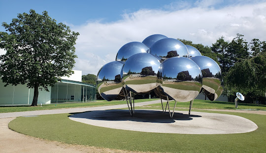
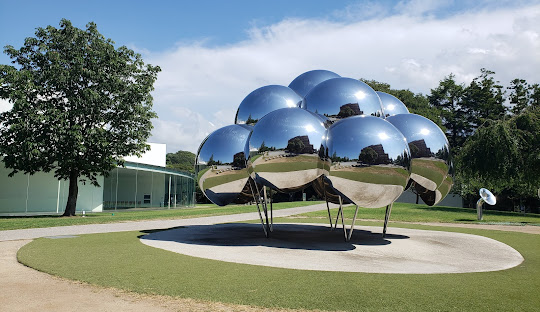

Is the capital city of Kyoto Prefecture in the Kansai region of Japan's largest and most populous island of Honshu. As of 2020, the city had a population of 1.46 million, making it the ninth-most populous city in Japan. The city is the cultural anchor of the substantially larger Greater Kyoto, a metropolitan statistical area (MSA) home to a census-estimated 3.8 million people. It is also part of the even larger Keihanshin metropolitan area, along with Osaka and Kobe. Kyoto is one of the oldest municipalities in Japan, having been chosen in 794 as the new seat of Japan's imperial court by Emperor Kanmu. The original city, named Heian-kyō, was arranged in accordance with traditional Chinese feng shui following the model of the ancient Chinese capitals of Chang'an and Luoyang. The emperors of Japan ruled from Kyoto in the following eleven centuries until 1869. It was the scene of several key events of the Muromachi period, Sengoku period, and the Boshin War, such as the Ōnin War, the Honnō-ji Incident, the Kinmon incident, and the Battle of Toba–Fushimi. The capital was relocated from Kyoto to Tokyo after the Meiji Restoration. The modern municipality of Kyoto was established in 1889. The city was spared from large-scale destruction during World War II and, as a result, its prewar cultural heritage has mostly been preserved. Kyoto is considered the cultural capital of Japan and is a major tourist destination.

Is the capital of Japan and one of the most populous cities in the world with a population of over 14 million residents as of 2023. The Tokyo metropolitan area, which includes Tokyo and nearby prefectures, is the world's most populous metropolitan area, with 40.8 million residents as of 2023, and is the second largest metropolitan economy in the world after New York, with a 2022 gross metropolitan product estimated at US$2.08 trillion (US$51,124 per capita). Located at the head of Tokyo Bay, Tokyo is part of the Kantō region on the central coast of Honshu, Japan's largest island. Tokyo serves as Japan's economic center and the seat of both the Japanese government and the Emperor of Japan. The Tokyo Metropolitan Government administers Tokyo's central 23 special wards (which formerly made up Tokyo City), various commuter towns and suburbs in its western area, and two outlying island chains known as the Tokyo Islands. Despite most of the world knowing Tokyo as a city, since 1943 its governing structure has been more akin to a prefecture, with an accompanying Governor and Assembly taking precedence over the smaller municipal governments which make up the metropolis.
 
 
Kanazawa is the capital of Ishikawa Prefecture, on Japan’s central Honshu Island. It's known for well-preserved Edo-era districts, art museums and regional handicrafts. Kenrokuen Garden, begun in the 17th century, is celebrated for its classic landscape designs incorporating ponds and streams. Adjacent Kanazawa Castle was built in the 1580s, after the defeat of the Peasant’s Kingdom, Japan's only Buddhist fiefdom.
The 21st Century Museum of Contemporary Art, Kanazawa is a museum of contemporary art located in Kanazawa, Ishikawa, Japan. The museum was designed by Japanese architects Kazuyo Sejima and Ryue Nishizawa of the architectural office SANAA in 2004.
It is a large, partially restored Japanese castle in Kanazawa, Ishikawa, Japan. It is located adjacent to the celebrated Kenroku-en Garden, which once formed the castle's private outer garden. It was the headquarters of Kaga Domain, ruled by the Maeda clan for 14 generations from the Sengoku period until the coming of the Meiji Restoration in 1871.
Fukuoka, capital of Fukuoka Prefecture, sits on the northern shore of Japan’s Kyushu Island. It’s known for ancient temples, beaches and modern shopping malls, including Canal City. Maizuru Park contains ruins of 17th-century Fukuoka Castle. The central Hakata district contains Tōchō-ji Temple, home to a 10m wooden Buddha and the Hakata Machiya Folk Museum, with displays on daily life in the Meiji and Taishō eras.
tall tower located in the Momochihama area of Fukuoka, Japan. It is the tallest seaside tower in Japan. The highest observation deck at 123 metres has a 360° view of the surrounding area, being most visited at sunset. Fukuoka Tower was finished in 1989, taking a total of 14 months to build at a cost of ¥6 billion (roughly equivalent US$45 million in 1989). It was designed by Nikken Sekkei and constructed on a reclaimed land out of Hakata Bay. The tower appears in the Japanese film Godzilla vs. SpaceGodzilla (1994). In a battle between the titular monsters, SpaceGodzilla uses the tower to absorb energy before Godzilla destroys the tower after the foundation is weakened by the mech MOGUERA.
Within the park is the Fukuoka Art Museum. The museum has an excellent collection of art and sculptures, including works by Dali and Miro. Opposite the museum is a small pay-to-enter Japanese garden, which contains teahouses, a stone garden, and a small pond.Fukuoka Art Museum is an art museum in Fukuoka, Japan. It contains a notable collection of Asian art and exhibits various temporary exhibitions. In November 2010 it hosted a large exhibition of Marc Chagall's work. The Madonna of Port Lligat by Salvador Dalí is exhibited at this museum.